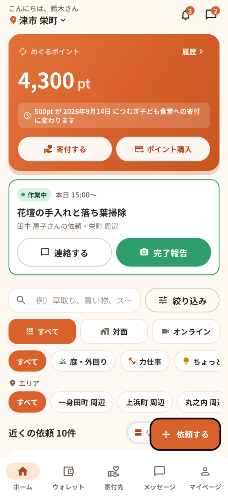
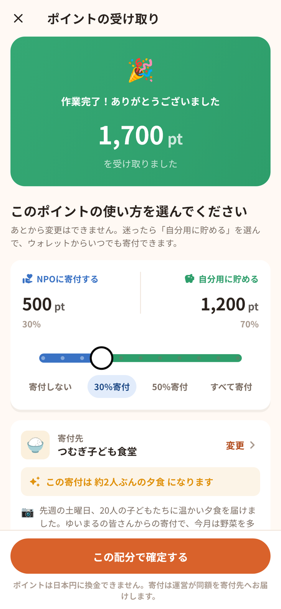

草むしり、買い物のつきそい、スマホの相談。ご近所のちょっとした困りごとを、お互いさまで助け合うアプリです。
お礼は現金ではなく、地域にめぐる「ポイント」で。
試験運用のため、TestFlight というアプリを通して配っています。入れ方はこちら

困っている人・手伝う人・地域の団体。この3つのあいだをポイントがめぐります。
「庭の草むしりを手伝ってほしい」など、困りごとを出します。詳しい住所は、お相手が決まるまで表示されません。
近所の依頼を見て、できそうなものを引き受けます。終わったら写真で報告。お礼のポイントを受け取ります。
受け取ったポイントは、次に自分が困ったときに使うか、地域のNPOに寄付します。寄付は運営が同額を日本円で団体にお届けします。
「めぐるポイント」は換金できません。
使い道は2つだけ。
お金のやり取りが起きないので、ご近所づきあいの気まずさがありません。

試験運用のあいだは、Apple の「TestFlight」というアプリを通してお配りしています。はじめの1回だけ、手順が1つ多くなります。
うまくいかないときは、お配りした団体の担当者か、下記のサポートまでご連絡ください。
NPO・社会福祉協議会・自治会・こども食堂など、地域で活動する団体を寄付先として登録しています。費用はかかりません。登録すると、アプリの中に団体が載り、利用者からの寄付が届きます。
また、団体の皆さんからご利用者へアプリをご紹介いただくことで、地域の助け合いが団体への支援としてめぐります。
フォームから問い合わせる